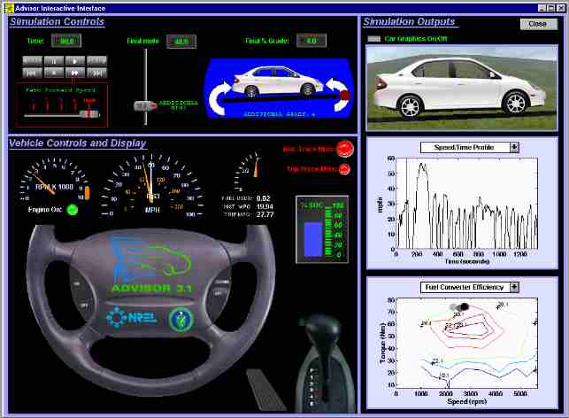

Figure 2. Block Diagram drive_cycle
Overview
As seen in Figure 1, the real-time interactive interface layout is divided into three sections. The top left section is Simulation Controls. The bottom left section is Vehicle Controls and Display. The right section is Simulation Outputs. The Real-time Interactive Interface supports drive cycle inputs and shows dynamic outputs at each time step of the simulation. These input and output additions offer several benefits.

Figure 1. Real-time Interactive Interface
Simulation Controls
The Simulation Controls section has interactive drive cycle inputs. Buttons similar to a tape player control the simulation speed. A slider adds miles per hour requested (mphr) to the drive cycle at the current time step of the simulation. A round red spot on the curved arrow is used to add or subtract grade to the drive cycle at the current time step of the simulation. The speed and grade are implemented into ADVISOR’s drive_cycle block diagram as illustrated in Figure 2. Below the Simulation Controls is the Vehicle Controls and Display.
Figure 2. Block Diagram drive_cycle
Vehicle Controls and Display
The Vehicle Controls and Display section shows vehicle outputs. These outputs are similar to what are found in regular and advanced vehicles. They include engine rpm, vehicle miles per hour requested (white needle) and vehicle miles per hour achieved, fuel used, instant fuel economy and trip (cumulative) fuel economy, batter state of charge (%SOC), current gear, and acceleration (proportional to gas pedal displacement). To the right of Vehicle Controls and Display is Simulation Outputs.
Simulation Outputs
The Simulation Outputs section displays vehicle graphics and technical information. The selection of technical outputs can be seen in Figure 2. They include the position of operation on the fuel converter efficiency map and motor efficiency map, the shaft output power from the engine, motor, and generator, and the road load components. The Simulation Outputs section offers some of the greatest benefits.
Figure 3. Technical Output Plots
Benefits
Several benefits are derived from the interactive input and the dynamic output capability offered by the interface. The interactive input allows for quickly testing vehicle behavior response to drive cycle inputs. For example, it can show how the fuel economy will respond to an increase or decrease in grade. The dynamic output capability goes beyond some of the static plot capabilities. It can trace the position of operation of the fuel converter or motor on efficiency maps. It can also help provide the “feel” of driving. For example, if the vehicle control strategy results in a vehicle shifting every second, it is a recognizable problem in the real-time environment. It is easy to imagine doing the shifting every time the interface shows it, and deciding that it shifts more frequently than most drivers would tolerate. Conversely, it would be difficult to decide how frequently is too frequently by looking at a static plot. These are some of the advantages that the real-time interactive interface brings to ADVISOR.
Last Revision: 01/16/01:ab